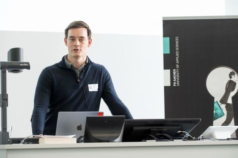
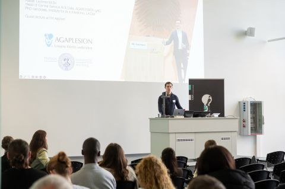

Manchmal ist es schön, an den Ort zurückzukehren, an dem ein wichtiger Teil des eigenen Weges begonnen hat. An meiner Alma Mater, der FH Aachen, durfte ich in der Reihe Business Insights über meinen Werdegang berichten: von der Betriebswirtschaft zur Informatik. Ein Weg, den ich so wohl selbst nicht erwartet hätte.


Ein Weg in Etappen
Studium der Betriebswirtschaft mit Schwerpunkt Wirtschaftsinformatik, dann Informationstechnik, dann der Master in Information Systems in Marburg und schließlich die Promotion in medizinischer KI. Rückblickend war es gerade die Mischung, die mir geholfen hat: Wer Prozesse, Budgets und Technik gleichzeitig versteht, kann KI im Krankenhaus bauen und einführen.
Zum Nachhören
Im Podcast der FH Aachen habe ich ausführlicher über diesen Weg gesprochen: über Neugier, Mut zur Veränderung und die Learnings, die mir als Absolvent besonders geholfen haben. Folge 23: Wirtschaftsinformatik – Mit KI die Medizinbranche verbessern.
Danke an die FH Aachen, Verena Vierhaus und Hannah Bösling für die Einladung und eine Studienzeit, an die ich immer gerne zurückdenke.